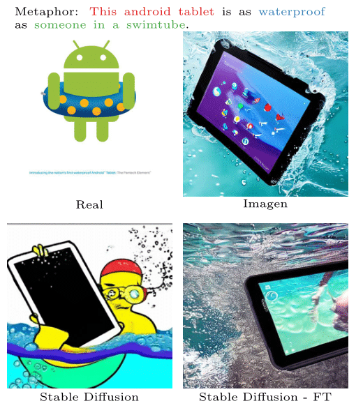

Abstract
Creativity is an indispensable part of human cognition and also an inherent part of how we make sense of the world. Metaphorical abstraction is fundamental in communicating creative ideas through nuanced relationships between abstract concepts such as feelings. While computer vision benchmarks and approaches predominantly focus on understanding and generating literal interpretations of images, metaphorical comprehension of images remains relatively unexplored. Towards this goal, we introduce MetaCLUE, a set of vision tasks on visual metaphor. We also collect high-quality and rich metaphor annotations (abstract objects, concepts, relationships along with their corresponding object boxes) as there do not exist any datasets that facilitate the evaluation of these tasks. We perform a comprehensive analysis of state-of-the-art models in vision and language based on our annotations, highlighting strengths and weaknesses of current approaches in visual metaphor Classification, Localization, Understanding (retrieval, question answering, captioning) and gEneration (text-to-image synthesis) tasks. We hope this work provides a concrete step towards systematically developing AI systems with human-like creative capabilities.
What is a Visual Metaphor?
Humans engage metaphors in their creative thinking process as strategies to link or blend concepts, or to view a concept from a target domain in terms of another, apparently dissimilar concept from a source domain [lakoff et al., 2008]. Take as an example 'This car is a cheetah', where This car is compared to 'a cheetah' in terms of speed. Metaphors have a simple syntactic structure of 'A is B' where A is referred to as the primary concept and B as the secondary concept. The implied analogy in a metaphor is of the form: (primary concept) is as (relationship) as (secondary concept) and often involves an attribute transfer from the secondary to the primary concept. there are at least 4 different types of visual metaphors: Contextual, Hybrid, Juxtaposition, and Multimodal

Introducing MetaCLUE
Much of the computer vision focus on literal interpretation of images. We introduce, MetaCLUE, consisting of four interesting tasks (Classification, Understanding, Localization and Generation) related to metaphorical interpretation and generation of images.
Results
We show models struggle to produce satisfactory results in many cases, demonstrating the difficulty of these tasks. Below are some examples:
PaLI-17B [Chen et al., 2022], the state-of-the-art literal model for Captioning and VQA performs poorly on MetaCLUE.
Sample Localization Results using a CLIP-based phrase-grounding model from [Li et al., 2022], where the secondary concepts are contextual. GT boxes are shown in green, whereas the predictions are shown in blue. We find relatively better performance in localizing secondary objects compared to primary objects.
Sample Image Generations for a given metaphorical message (shown on top) with Imagen, Stable Diffusion and fine-tuned (FT) version of Stable Diffusion, indicating the bigscope of improvements in generating visual metaphors.

-->